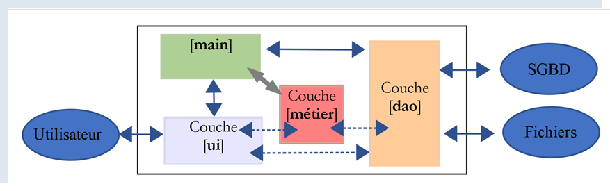
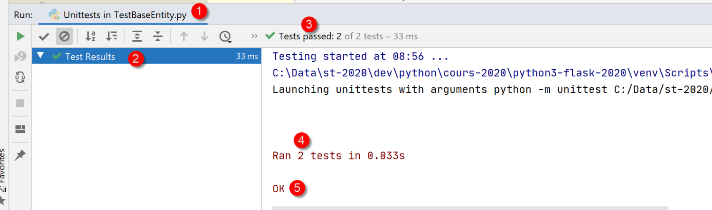
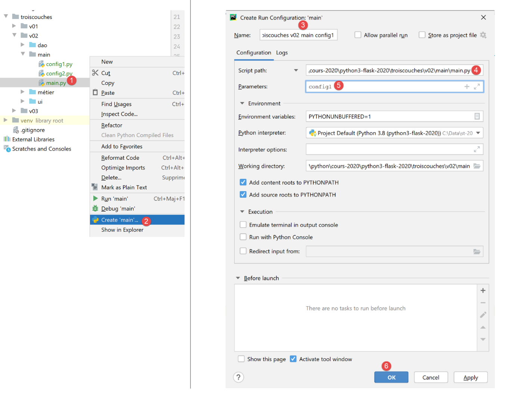

14. Arquitetura em camadas e programação baseada em interfaces
14.1. Introdução
Propomos escrever uma aplicação que exiba as notas de alunos do ensino básico. Esta aplicação pode ter uma arquitetura em camadas:

- a camada [ui] (Interface do Utilizador) é a camada que interage com o utilizador da aplicação;
- a camada [business] implementa as regras de negócio da aplicação, tais como o cálculo de um salário ou de uma fatura. Esta camada utiliza dados do utilizador através da camada [presentation] e do SGBD através da camada [DAO];
- a camada [DAO] (Objetos de Acesso a Dados) gere o acesso aos dados no SGBD (Sistema de Gestão de Bases de Dados).
Esta é a arquitetura que foi utilizada no |curso Python 2|. Também é possível introduzir uma variante:

As diferenças em relação à estrutura em camadas anterior são as seguintes:
- um script principal chamado [main] acima organiza a instanciação das camadas;
- as camadas [ui, business, dao] já não comunicam necessariamente entre si. Se for necessário, o script [main] fornece-lhes as referências às camadas de que necessitam;
O código aqui está organizado em áreas funcionais com um coordenador central:
- o orquestrador é o script principal [main];
- as camadas [ui], [dao] e [business] são os centros de especialização;
Poderíamos chamar a esta estrutura uma organização orquestral.
14.2. Exemplo 1
Iremos ilustrar a arquitetura em camadas utilizando uma aplicação de consola simples:
- não haverá base de dados;
- a camada [DAO] irá gerir as entidades Aluno, Turma, Disciplina e Nota para tratar das notas dos alunos;
- a camada [business] calculará métricas com base nas notas de um aluno específico;
- a camada [ui] será uma aplicação de consola que apresenta os resultados dos alunos;
O projeto PyCharm para a aplicação é o seguinte:
 |
Nota: As pastas a azul fazem parte das [Fontes Raiz] do projeto PyCharm.
14.2.1. As entidades da aplicação
Referir-nos-emos a classes cuja única função é encapsular dados como entidades. Os dicionários poderiam ser utilizados para este fim. A vantagem de uma classe é que nos permite testar a validade dos dados armazenados no objeto e fornecer um método que devolve a identidade do objeto como uma cadeia de caracteres.
 |
14.2.1.1. A entidade [Class]
A entidade [Class] (Class.py) representa uma turma do ensino básico:
Notas
- linha 7: a entidade [Class] deriva da entidade [BaseEntity] abordada na secção |A classe BaseEntity|;
- linhas 11–16: uma classe é definida por um ID e um nome (linha 16). A propriedade [id] é fornecida pela classe [BaseEntity] e o nome pela classe [Class];
- linhas 18–30: getter/setter para o atributo [name];
14.2.1.2. A entidade [Subject]
A classe [Subject] (subject.py) é a seguinte:
Notas
- linha 7: a classe [Class] deriva da classe [BaseEntity];
- linhas 11–17: um sujeito é definido pelo seu ID [id], pelo seu nome [name] e pelo seu peso [coefficient];
- linhas 19–50: getters/setters para os atributos da classe;
14.2.1.3. A entidade [Student]
A classe [Student] (student.py) é a seguinte:
Notas
- linha 9: a classe [Student] deriva da classe [BaseEntity];
- linhas 13–20: Um aluno é caracterizado pelo seu ID [id], apelido [lastName], nome próprio [firstName] e turma [class]. O último parâmetro é uma referência a um objeto [Class];
- linhas 22–65: getters/setters para os atributos da classe;
14.2.1.4. A entidade [Note]
A classe [Note] (note.py) é a seguinte:
Notas
- linha 8: a classe [Note] deriva da classe [BaseEntity];
- linhas 12–20: Um objeto [Note] é caracterizado pelo seu ID [id], o valor da nota [value], uma referência [student] ao aluno que recebeu essa nota e uma referência à disciplina [subject] associada à nota;
- linhas 22–75: getters/setters para os atributos da classe;
14.2.2. Configuração da aplicação
 |
O ficheiro [config.py] configura o ambiente para o script principal [main] (1), bem como para os testes (2). Todos estes scripts têm uma instrução [import config] no início do código. Note que o diretório que contém o script alvo do comando [python script] faz automaticamente parte do Python Path. Portanto, se [config] estiver no mesmo diretório que os scripts que contêm a instrução [import config], será encontrado. Os ficheiros [1] e [2] são idênticos neste caso. Isto pode não ser sempre o caso.
O ficheiro [config.sys] é o seguinte:
- Linhas 11–14: os diretórios que devem fazer parte do Python Path (sys.path);
- O diretório [f"{root_dir}/02/entities"] fornece acesso às classes [BaseEntity] e [MyException];
- a pasta [f"{script_dir}/../entities"] fornece acesso às classes [Student], [Class], [Subject], [Grade];
- a pasta [f"{script_dir}/../interfaces"] fornece acesso às interfaces da aplicação;
- a pasta [f"{script_dir}/../services"] fornece acesso às classes que implementam as interfaces;
14.2.3. Teste de Entidades
 |
Aqui, iremos escrever testes executados por uma ferramenta chamada [unittest]. O PyCharm inclui várias estruturas de testes. Pode escolher uma delas na configuração do PyCharm:

- em [4], estão disponíveis várias estruturas de teste:

14.2.3.1. A classe de teste [TestBaseEntity]
O script de teste [TestBaseEntity] será o seguinte:
Notas
- linha 1: importamos o módulo [unittest], que fornece os vários métodos de teste;
- linhas 3–6: configuramos a aplicação para que as classes necessárias para o teste possam ser encontradas;
- linha 9: uma classe de teste [unittest] deve estender a classe [unittest.TestCase];
- linhas 11, 27: as funções de teste devem ter um nome que comece por [test], caso contrário não serão reconhecidas;
- linhas 13–16: importamos as classes de que precisamos;
- Nesta classe de teste, queremos verificar o comportamento dos métodos [BaseEntity.fromdict] (linha 34) e [BaseEntity.fromjson] (linha 18). A classe [Note] possui propriedades que são referências a outras classes. Queremos verificar se os dois métodos anteriores criam objetos [Note] válidos;
- linha 18: criamos um objeto [Note] a partir de um objeto JSON;
- Linha 21: verificamos se o objeto criado é, de facto, do tipo [Note]. O método [assertIsInstance] é um método da classe [unittest.TestCase], que é a classe pai da classe [TestBaseEntity];
- linha 22: verificamos se [note.student] é efetivamente do tipo [Student];
- linha 23: verificamos se [note.student.class] é efetivamente do tipo [Class];
- linha 24: verificamos se [note.subject] é efetivamente do tipo [Subject];
- linhas 33–42: fazemos o mesmo com o método [BaseEntity.fromdict];
Existem várias formas de executar os testes:
 |
- em [1-2], executamos [TestBaseEntity] utilizando a estrutura [UnitTest];
- em [3-5], os testes falham. [UnitTests] indica que não encontrou testes para executar;
Os testes falham devido à estrutura do código [TestBaseEntity]:
O que causa problemas para a estrutura [UnitTest] é a presença de código executável (linhas 3–6) antes da definição da classe de teste (linha 9).
Por isso, reorganizamos o código da seguinte forma:
- Linhas 6–10: Definimos uma função [setUp]. Esta função tem uma função específica: é executada antes de cada função de teste (test_note1, test_note2);
Uma vez feito isto, a execução da classe [TestBaseEntity] produz os seguintes resultados:
 |
Desta vez, ambos os métodos de teste foram executados e os testes foram bem-sucedidos.
Vamos ver o que acontece quando um teste falha. Vamos modificar o código em [test_note1] da seguinte forma:
- linha 2: verificamos se 1==2;
Os resultados da execução são os seguintes:
 |
Pode descobrir a causa do erro clicando no teste com falha [2]:
 |
- em [7-8], a causa do erro;
Outra forma de executar uma classe de teste é executá-la num terminal:
 |
(venv) C:\Data\st-2020\dev\python\cours-2020\python3-flask-2020\troiscouches\v01\tests>python -m unittest TestBaseEntity.py
..
----------------------------------------------------------------------
Ran 2 tests in 0.026s
OK
A linha 6 indica que ambos os testes foram bem-sucedidos (eliminámos o erro 1==2);
Por fim, uma terceira forma de executar a classe de teste [TestBaseEntity], ainda num terminal, é a seguinte. Terminamos a classe de teste com as seguintes linhas 6–7;
…
self.assertIsInstance(note.élève.classe, Classe)
self.assertIsInstance(note.matière, Matière)
if __name__ == '__main__':
unittest.main()
- linha 6: a variável [__name__] é o nome atribuído ao script que está a ser executado. Quando o script é aquele iniciado pelo comando [python script.py], a variável [__name__] é [__main__] (2 sublinhados antes e depois do identificador). Assim, a linha 7 é executada apenas quando o script [TestBaseEntity] é iniciado pelo comando [python TestBaseEntity.py]. A instrução [unittest.main()] inicia a execução do script através da estrutura [UnitTest]. Aqui está um exemplo:
(venv) C:\Data\st-2020\dev\python\cours-2020\python3-flask-2020\troiscouches\v01\tests>python TestBaseEntity.py
..
----------------------------------------------------------------------
Ran 2 tests in 0.013s
OK
14.2.3.2. A classe de teste [TestEntities]
A classe de teste [TestEntities] é a seguinte:
1 2 3 4 5 6 7 8 9 10 11 12 13 14 15 16 17 18 19 20 21 22 23 24 25 26 27 28 29 30 31 32 33 34 35 36 37 38 39 40 41 42 43 44 45 46 47 48 49 50 51 52 53 54 55 56 57 58 59 60 61 62 63 64 65 66 67 68 69 70 71 72 73 74 75 76 77 78 79 80 81 82 83 84 85 86 87 88 89 90 91 92 93 94 95 96 97 98 99 100 101 102 103 104 105 106 107 108 109 110 111 112 113 114 115 116 117 118 119 120 121 122 123 124 125 126 127 128 129 130 131 132 133 134 135 136 137 138 139 140 141 142 143 144 145 146 147 148 149 150 151 152 153 154 155 156 157 158 159 160 161 162 163 164 165 166 167 168 169 170 171 172 173 174 175 176 177 178 179 180 181 182 183 184 185 186 187 188 189 190 191 192 193 194 195 196 197 198 199 200 201 202 203 204 205 206 207 208 209 210 211 212 213 214 215 216 217 218 219 220 221 222 223 224 225 226 | |
- O objetivo do script de teste é testar os setters da classe: verificar se não é possível atribuir valores incorretos aos atributos das várias entidades;
- linhas 11–24: testamos se um ID inválido não pode ser atribuído a um aluno. Como passamos o valor 'x' na linha 16 como o ID do aluno, esperamos que ocorra uma exceção. Devemos, portanto, prosseguir para as linhas 20–22;
- linha 21: exibir a mensagem de erro;
- linha 22: recuperamos o código de erro (ver secção |A Entidade MyException|);
- linha 24: verificamos (assert) que o código de erro é 1. Aqui, verificamos duas coisas:
- que ocorreu realmente um erro;
- que o código de erro é 1;
- este processo é repetido com as funções nas linhas 24–213;
- linhas 215–222: testamos se uma ação lança uma exceção de um determinado tipo;
- linha 220: indicamos que o teste foi bem-sucedido se lançar uma exceção do tipo [MyException];
Resultados
Executamos o script de teste:
 |
Os resultados obtidos são os seguintes:
Testing started at 09:39 ...
C:\Data\st-2020\dev\python\cours-2020\python3-flask-2020\venv\Scripts\python.exe "C:\Program Files\JetBrains\PyCharm Community Edition 2020.1.2\plugins\python-ce\helpers\pycharm\_jb_unittest_runner.py" --path C:/Data/st-2020/dev/python/cours-2020/python3-flask-2020/troiscouches/v01/tests/TestEntités.py
Launching unittests with arguments python -m unittest C:/Data/st-2020/dev/python/cours-2020/python3-flask-2020/troiscouches/v01/tests/TestEntités.py in C:\Data\st-2020\dev\python\cours-2020\python3-flask-2020\troiscouches\v01\tests
code erreur=1, message=MyException[1, L'identifiant d'une entité <class 'Elève.Elève'> doit être un entier >=0]
code erreur=1, message=MyException[1, L'identifiant d'une entité <class 'Classe.Classe'> doit être un entier >=0]
code erreur=1, message=MyException[1, L'identifiant d'une entité <class 'Matière.Matière'> doit être un entier >=0]
code erreur=1, message=MyException[1, L'identifiant d'une entité <class 'Note.Note'> doit être un entier >=0]
code erreur=21, message=MyException[21, Le nom de la matière 1 doit être une chaîne de caractères non vide]
code erreur=22, message=MyException[22, Le coefficient de la matière y doit être un réel >=0]
code erreur=31, message=MyException[31, L'attribut x de la note 1 doit être un nombre dans l'intervalle [0,20]]
code erreur=32, message=MyException[32, L'attribut [y] de la note 1 doit être de type Elève ou dict ou json. Erreur : Expecting value: line 1 column 1 (char 0)]
code erreur=33, message=MyException[33, L'attribut [z] de la note 1 doit être de type Matière ou dict ou json. Erreur : Expecting value: line 1 column 1 (char 0)]
code erreur=41, message=MyException[41, Le nom de l'élève 1 doit être une chaîne de caractères non vide]
code erreur=42, message=MyException[42, Le prénom de l'élève 1 doit être une chaîne de caractères non vide]
code erreur=43, message=MyException[43, L'attribut [t] de l'élève 1 doit être de type Classe ou dict ou json. Erreur : Expecting value: line 1 column 1 (char 0)]
Ran 14 tests in 0.040s
OK
Process finished with exit code 0
Aqui, todos os testes foram aprovados
14.2.4. A camada [dao]

A camada [dao] implementa a interface [InterfaceDao] [1]. Esta é implementada pela classe [Dao] (2). O script [tests_dao] (3) testa os métodos da camada [dao].
14.2.4.1. Interface [InterfaceDao]
Uma interface é um contrato entre o código chamador e o código chamado. É o código chamado que fornece a interface:
 |
- o código chamador [1] não conhece a implementação do código chamado [3]. Ele apenas sabe como chamá-lo. A interface [2] indica-lhe como. Esta interface define um conjunto de métodos/funções a utilizar para interagir com o código chamado. Esta interface é também conhecida como API (Interface de Programação de Aplicações);
A camada [dao] irá fornecer a seguinte interface:
- [get_classes] devolve a lista de turmas do ensino básico;
- [get_subjects] devolve a lista de disciplinas lecionadas no ensino básico;
- [get_students] devolve a lista de alunos do ensino básico;
- [get_grades] devolve uma lista de todas as notas dos alunos;
- [get_grades_for_student_by_id] devolve as notas de um aluno específico;
- [get_student_by_id] devolve um aluno identificado pelo seu ID;
O código de chamada utilizará apenas estes métodos. Não precisa de saber como são implementados. Os dados podem, então, provir de diferentes fontes (codificados, de uma base de dados, de ficheiros de texto, etc.) sem afetar o código de chamada. Isto é designado por programação baseada em interfaces.
O Python 3 tem um conceito semelhante ao de uma interface: a classe abstrata. Vamos utilizá-la. Vamos agrupar as interfaces para este exemplo na pasta [interfaces].
Definimos uma classe abstrata [InterfaceDao] (InterfaceDao.py) para a camada [dao]:
Notas:
- linha 2: ABC = Abstract Base Class. Importamos a classe ABC do módulo [abc], bem como o decorador [abstractmethod] utilizado nas linhas 10, 15, 20, 25, 30 e 35;
- linha 8: a classe abstrata chama-se [InterfaceDao] e deriva da classe [ABC];
- os métodos da classe abstrata são decorados com o decorador [@abstractmethod], o que torna o método decorado um método abstrato: o seu código não está definido. No entanto, incluímos código nesse local: a instrução [pass], que não faz nada;
- A classe abstrata [InterfaceDao] não pode ser instanciada. Apenas as classes derivadas de [InterfaceDao] que tenham implementado todos os métodos de [InterfaceDao] podem ser instanciadas. Portanto, se criarmos duas classes [Dao1] e [Dao2] derivadas da classe [InterfaceDao], ambas implementarão os métodos abstratos de [InterfaceDao]. Poderíamos, assim, dizer que elas implementam a interface [InterfaceDao];
- as linguagens que suportam tanto interfaces como classes abstratas atribuem um papel diferente à interface em comparação com a classe abstrata. Uma interface não tem atributos e não pode ser instanciada. Uma classe pode implementar uma interface definindo todos os seus métodos;
14.2.4.2. Implementação de [Dao]
A classe [Dao] (dao.py) implementa a interface [InterfaceDao] da seguinte forma:
Notas:
- linhas 1-7: importamos as entidades e a interface [InterfaceDao];
- linha 11: a classe [Dao] deriva da classe abstrata [InterfaceDao]. Dizemos que ela implementa a interface [InterfaceDao];
- linha 14: o construtor não tem parâmetros. Ele codifica quatro listas:
- linhas 15–18: a lista de classes;
- linhas 19–22: a lista de disciplinas;
- linhas 23–28: a lista de alunos;
- linhas 29–38: a lista de notas;
- linhas 40–44: implementação dos métodos da [Interface Dao]. Aqui, não os definimos para vermos a mensagem de erro emitida pelo Python;
Um programa de teste poderia ter o seguinte aspecto [tests-dao.py]:
Nota: O script [tests-dao.py] não é um [unittest] porque não contém nenhum método cujo nome comece por [test_].
Os comentários são autoexplicativos. As linhas 11–25 utilizam a interface da camada [dao]. Não há aqui quaisquer pressupostos sobre a implementação efetiva da camada. Na linha 9, instanciamos a camada [dao].
Os resultados da execução deste script são os seguintes:
C:\Data\st-2020\dev\python\cours-2020\python3-flask-2020\venv\Scripts\python.exe C:/Data/st-2020/dev/python/cours-2020/python3-flask-2020/troiscouches/v01/tests/tests_dao.py
Traceback (most recent call last):
File "C:/Data/st-2020/dev/python/cours-2020/python3-flask-2020/troiscouches/v01/tests/tests_dao.py", line 9, in <module>
daoImpl = Dao()
TypeError: Can't instantiate abstract class Dao with abstract methods get_classes, get_matières, get_notes, get_notes_for_élève_by_id, get_élève_by_id, get_élèves
Process finished with exit code 1
Vemos que ocorre um erro assim que a classe [Dao] é instanciada (linha 3 acima). O interpretador Python 3 indica que não consegue instanciar a classe porque não definimos os métodos abstratos [get_classes, get_subjects, get_grades, get_grades_for_student_by_id, get_student_by_id, get_students].
O PyCharm também suporta classes abstratas e oferece a possibilidade de definir os seus métodos:
 |
- em [1], clique com o botão direito do rato no código;
- em [2-3], selecione [Gerar / Implementar Métodos] para implementar os métodos em falta da classe [Dao];
- em [4], selecione os métodos a implementar — neste caso, todos eles;
Depois de fazer isso, o PyCharm completa a classe [Dao] da seguinte forma:
Completamos a classe [Dao] da seguinte forma:
- As linhas 5–19 são simples;
- linhas 29–36: o método que devolve o aluno cujo ID é passado. Se o aluno não existir, é lançada uma exceção;
- linha 31: a função [filter] permite filtrar uma lista:
- o primeiro parâmetro é o critério de filtragem;
- o segundo parâmetro é a lista a ser filtrada, neste caso a lista de alunos;
- linha 31: o critério de filtragem para a lista é implementado utilizando uma função [f(e:Student) -> bool]. Esta é aplicada a cada elemento da lista a ser filtrada. Se o elemento satisfizer o critério de filtragem, é mantido na lista filtrada; caso contrário, é excluído. Aqui, podemos:
- especificar o nome da função f e implementá-la noutro local. A chamada à função [filter] passa então a ser [filter(f, self.get_students)];
- fornecer a definição da função f. A chamada à função [filter] passa então a ser [filter(f(e :Student){…}, self.get_students())], onde [e] representa um elemento da lista filtrada, ou seja, um aluno. Foi isso que foi feito aqui. A definição da função f aqui seria [f(e :Student){return e.id == student_id)]: um aluno é selecionado apenas se o seu número de identificação [id] corresponder ao que está a ser procurado. Tal função pode ser substituída por uma chamada função lambda: [lambda e: e.id == student_id]:
- e: representa o parâmetro da função f, aqui um aluno. Pode usar qualquer nome que desejar;
- e.id==student_id é o critério de filtragem: um aluno [e] é selecionado apenas se o seu ID [id] corresponder ao que está a ser procurado;
- linha 31: a função [filter] devolve a lista filtrada como um tipo que não é do tipo [list], mas que pode ser convertido para o tipo [list]. É isso que fazemos aqui com a expressão [list(filtered_list)];
- linhas 33–34: se a lista filtrada estiver vazia, significa que o aluno procurado não existe. É então lançada uma exceção;
- linha 36: se chegarmos a este ponto, significa que não foi lançada nenhuma exceção. Sabemos então que recuperámos uma lista com 1 elemento (não há dois alunos com o mesmo número [id]). Por isso, devolvemos o primeiro elemento da lista;
- linhas 21–27: o método [get_notes_for_élève_by_id] deve devolver as notas do aluno cujo [id] lhe é passado;
- Linhas 22–23: Começamos por procurar o aluno com o ID [student_id] utilizando o método [get_student_by_id], que acabámos de comentar. Pode ocorrer uma exceção se o aluno que procuramos não existir. Uma vez que não existe um bloco try/catch em torno da instrução na linha 23, a exceção será propagada para o código de chamada. Este é o comportamento pretendido;
- Linhas 24–25: Assim que o aluno é recuperado, recuperamos todas as suas notas. Fazemos isto novamente utilizando um filtro:
- o filtro é [filter(criterion, self_getnotes()]. A lista a ser filtrada é, portanto, a lista de todas as notas de todos os alunos da escola;
- o critério de filtragem é expresso utilizando uma função [lambda]: lambda n: n.student.id == student_id. O parâmetro n é um elemento da lista a ser filtrada, ou seja, uma nota. O tipo [Note] tem uma propriedade [student] que representa o aluno a quem pertence a nota. Portanto, [n.student.id], que representa o ID desse aluno, deve ser igual ao ID do aluno que estamos a procurar;
Em seguida, executamos o script [tests-dao.py].
Obtenemos então os seguintes resultados:
C:\Data\st-2020\dev\python\cours-2020\python3-flask-2020\venv\Scripts\python.exe C:/Data/st-2020/dev/python/cours-2020/python3-flask-2020/troiscouches/v01/tests/tests_dao.py
{"id": 1, "nom": "classe1"}
{"id": 2, "nom": "classe2"}
{"id": 1, "nom": "matière1", "coefficient": 1}
{"id": 2, "nom": "matière2", "coefficient": 2}
{"id": 11, "nom": "nom1", "prénom": "prénom1", "classe": {"id": 1, "nom": "classe1"}}
{"id": 21, "nom": "nom2", "prénom": "prénom2", "classe": {"id": 1, "nom": "classe1"}}
{"id": 32, "nom": "nom3", "prénom": "prénom3", "classe": {"id": 2, "nom": "classe2"}}
{"id": 42, "nom": "nom4", "prénom": "prénom4", "classe": {"id": 2, "nom": "classe2"}}
{"id": 1, "valeur": 10, "élève": {"id": 11, "nom": "nom1", "prénom": "prénom1", "classe": {"id": 1, "nom": "classe1"}}, "matière": {"id": 1, "nom": "matière1", "coefficient": 1}}
{"id": 2, "valeur": 12, "élève": {"id": 21, "nom": "nom2", "prénom": "prénom2", "classe": {"id": 1, "nom": "classe1"}}, "matière": {"id": 1, "nom": "matière1", "coefficient": 1}}
{"id": 3, "valeur": 14, "élève": {"id": 32, "nom": "nom3", "prénom": "prénom3", "classe": {"id": 2, "nom": "classe2"}}, "matière": {"id": 1, "nom": "matière1", "coefficient": 1}}
{"id": 4, "valeur": 16, "élève": {"id": 42, "nom": "nom4", "prénom": "prénom4", "classe": {"id": 2, "nom": "classe2"}}, "matière": {"id": 1, "nom": "matière1", "coefficient": 1}}
{"id": 5, "valeur": 6, "élève": {"id": 11, "nom": "nom1", "prénom": "prénom1", "classe": {"id": 1, "nom": "classe1"}}, "matière": {"id": 2, "nom": "matière2", "coefficient": 2}}
{"id": 6, "valeur": 8, "élève": {"id": 21, "nom": "nom2", "prénom": "prénom2", "classe": {"id": 1, "nom": "classe1"}}, "matière": {"id": 2, "nom": "matière2", "coefficient": 2}}
{"id": 7, "valeur": 10, "élève": {"id": 32, "nom": "nom3", "prénom": "prénom3", "classe": {"id": 2, "nom": "classe2"}}, "matière": {"id": 2, "nom": "matière2", "coefficient": 2}}
{"id": 8, "valeur": 12, "élève": {"id": 42, "nom": "nom4", "prénom": "prénom4", "classe": {"id": 2, "nom": "classe2"}}, "matière": {"id": 2, "nom": "matière2", "coefficient": 2}}
{"id": 11, "nom": "nom1", "prénom": "prénom1", "classe": {"id": 1, "nom": "classe1"}}
élève n° 11 = {"id": 11, "nom": "nom1", "prénom": "prénom1", "classe": {"id": 1, "nom": "classe1"}}
note de l'élève n° 11 = {"id": 1, "valeur": 10, "élève": {"id": 11, "nom": "nom1", "prénom": "prénom1", "classe": {"id": 1, "nom": "classe1"}}, "matière": {"id": 1, "nom": "matière1", "coefficient": 1}}
note de l'élève n° 11 = {"id": 5, "valeur": 6, "élève": {"id": 11, "nom": "nom1", "prénom": "prénom1", "classe": {"id": 1, "nom": "classe1"}}, "matière": {"id": 2, "nom": "matière2", "coefficient": 2}}
Process finished with exit code 0
Note que ao apresentar uma nota (o processo é semelhante para outros objetos), também temos:
- o aluno associado à nota;
- a disciplina a que a nota se refere;
Este resultado é produzido pela função [BaseEntity.asdict] (consulte a secção «link»).
14.2.5. A camada [business]
 |  |
- [InterfaceMétier] é a interface da camada [business];
- [Business] é a classe de implementação da camada [business];
- [TestBusiness] é uma classe [UnitTest] para testar a classe [Business];
14.2.5.1. Interface [BusinessInterface]
A camada [business] irá implementar a seguinte interface [BusinessInterface] (BusinessInterface.py):
- [get_stats_for_student] devolve as notas do aluno idStudent juntamente com informações sobre o mesmo: média ponderada, nota mais baixa, nota mais alta. Esta informação está encapsulada num objeto do tipo [StudentStats];
14.2.5.2. A entidade [StatsForStudent]
O tipo [StatsForStudent] (StatsForStudent.py), que encapsula as estatísticas de um aluno (notas, mínima, máxima, média ponderada), é o seguinte:
Notas:
- linha 8: a classe [StatsForStudent] deriva da classe [BaseEntity];
- linhas 13–22: as propriedades da classe;
- um identificador [id] da [BaseEntity];
- o aluno [student] cujas estatísticas estão encapsuladas;
- as suas notas [grades];
- a sua média ponderada [weighted_average];
- a sua nota mais baixa [min];
- a sua nota máxima [max];
- Não definimos getters/setters para estes atributos. Partimos do princípio de que a camada [business] cria objetos deste tipo e que não cria objetos inválidos;
- linhas 23–33: a função [__str__] devolve uma cadeia de caracteres que contém as propriedades do objeto;
14.2.5.3. A implementação [Business]
A implementação [Business] (Metier.py) da interface [BusinessInterface] será a seguinte:
Notas
- linha 7: a classe [Métier] deriva da classe [InterfaceMétier]. É habitual dizer que ela implementa a interface [InterfaceMétier];
- linhas 9–12: o construtor recebe um único parâmetro, uma referência à camada [dao]. Na linha 10, note que atribuímos o tipo [InterfaceDao] ao parâmetro [dao]. Não esperamos uma implementação específica, mas simplesmente uma implementação que respeite a interface [DaoInterface]. Aqui, isso não importa, uma vez que o Python não terá este tipo em conta, mas é boa prática trabalhar com interfaces em vez de implementações específicas. O código fica assim mais fácil de modificar;
- linhas 19–60: implementação do método [get_stats_for_élève];
- linha 19: o método recebe um único parâmetro, o [idElève] do aluno para quem queremos as estatísticas;
- linha 24: solicitamos as notas do aluno à camada [dao]. Esta solicitação resulta numa exceção se o aluno não existir. Esta exceção não é tratada (sem try/catch) e é, portanto, propagada de volta para o código de chamada;
- linha 25: chegamos a este ponto se não tiver ocorrido nenhuma exceção. [student_grades] é então um dicionário com duas chaves [student, grade]:
- linha 25: Recuperamos informações sobre o aluno (o seu nome, turma, etc.);
- linha 26: recuperamos as suas notas;
- linhas 28–31: verificamos se o aluno tem notas. Se não tiver, não há estatísticas para calcular;
- linha 31: devolvemos um objeto [StatsForStudent] construído a partir de um dicionário utilizando o método [BaseEntity.fromdict];
- linhas 33–54: usamos as notas do aluno para calcular as estatísticas solicitadas. Os comentários do código devem ser suficientes para a compreensão;
- linhas 56–60: devolvemos um objeto [StatsForStudent] construído a partir de um dicionário utilizando o método [BaseEntity.fromdict];
14.2.5.4. Testar a camada [business]
Um script [UnitTest] para a camada [business] poderia ter o seguinte aspeto (TestMétier.py):
Notas
- linhas 6–9: a função [setUp] é utilizada aqui para configurar o caminho Python do teste;
- linha 16: instanciamos a camada [dao];
- linha 17: instanciamos a camada [business] e usamos o seu método [get_stats_for_student] para calcular as estatísticas do aluno n.º 11;
- linha 19: o [StatsForStudent] resultante é apresentado. Uma vez que [StatsForStudent] deriva de [BaseEntity], a cadeia JSON de [StatsForStudent] é aqui apresentada;
- linha 21: verificamos a nota mínima do aluno;
- linha 22: verificamos a sua nota máxima;
- linha 23: verificamos se a média ponderada é 7,333, com precisão de 10⁻³. Em geral, não é possível comparar números reais com exatidão porque, internamente, eles são normalmente representados apenas como aproximações;
Os resultados do teste são os seguintes:
Testing started at 18:17 ...
C:\Data\st-2020\dev\python\cours-2020\python3-flask-2020\venv\Scripts\python.exe "C:\Program Files\JetBrains\PyCharm Community Edition 2020.1.2\plugins\python-ce\helpers\pycharm\_jb_unittest_runner.py" --path C:/Data/st-2020/dev/python/cours-2020/python3-flask-2020/troiscouches/v01/tests/TestMétier.py
Launching unittests with arguments python -m unittest C:/Data/st-2020/dev/python/cours-2020/python3-flask-2020/troiscouches/v01/tests/TestMétier.py in C:\Data\st-2020\dev\python\cours-2020\python3-flask-2020\troiscouches\v01\tests
Ran 1 test in 0.015s
OK
stats=Elève={"id": 11, "nom": "nom1", "prénom": "prénom1", "classe": {"id": 1, "nom": "classe1"}}, notes=[10 6], max=10, min=6, moyenne pondérée=7.33
Process finished with exit code 0
14.2.6. A camada [ui]

- em [1], a interface da camada [ui];
- em [2], a implementação desta interface;
- em [3], o script principal da aplicação;
14.2.6.1. Interface [InterfaceUi]
A interface da camada [UI] será a seguinte:
Notas
- linhas 9-10: a camada [UI] terá apenas um método, [run];
14.2.6.2. A implementação da [Console]
A camada [console] é implementada pelo seguinte script [Console.py]:
- linhas 3-5: importar todas as interfaces;
- linha 11: a classe [Console] implementa a interface [InterfaceUi];
- linhas 12-17: o construtor da classe [Console] recebe uma referência à camada [business] como parâmetro. Note-se que atribuímos a este parâmetro o tipo [BusinessInterface] para enfatizar que estamos a trabalhar com interfaces em vez de implementações específicas;
- linha 24: implementação do método [run] da interface;
- linha 27: um loop que termina quando a condição na linha 31 é satisfeita;
- linha 29: entrada de dados digitados no teclado. A função [input] recebe um parâmetro opcional: a mensagem a ser exibida no ecrã solicitando a entrada. Esta entrada é sempre recuperada como uma cadeia de caracteres. A função [strip] remove quaisquer espaços em branco à esquerda ou à direita da cadeia de caracteres;
- linhas 34–39: verificamos se a entrada, um ID de aluno, é válida. Deve ser um inteiro >= 1. Recorde-se que a entrada foi introduzida como uma cadeia de caracteres;
- linha 36: tentamos converter a entrada num inteiro de base 10. A função [int] lança uma exceção se isso não for possível;
- linha 37: chegamos a este ponto apenas se não tiver ocorrido nenhuma exceção. Verificamos se o inteiro recuperado é de facto >=1;
- linhas 38–39: tratamos a exceção. Se ocorreu uma exceção, a variável [ok] da linha 34 permanece definida como [False];
- linhas 41–43: se a entrada estiver incorreta, é exibida uma mensagem de erro e o ciclo é reiniciado (linha 43);
- linhas 45–48: calculamos as estatísticas do aluno cujo ID foi introduzido;
- linha 46: é utilizado o método [get_stats_for_student] da camada [business]. Este método lança uma exceção se o aluno não existir. Esta exceção é tratada nas linhas 47–48. Sabemos que as camadas [DAO] e [business] lançam a exceção [MyException];
14.3. O script principal [main]
O script principal [main] é o seguinte (main.py):
- linhas 1–4: configurar o Python Path da aplicação;
- linhas 6-9: importam as classes e interfaces necessárias;
- linha 14: instanciar a camada [DAO];
- linha 16: instanciar a camada [business];
- linha 18: instanciar a camada [ui];
- linha 20: inicia a interface do utilizador;
- linhas 13–20: normalmente, não são lançadas exceções a partir destas linhas. Quaisquer exceções propagadas a partir das camadas [DAO] e [business] são capturadas pela camada [Console]. O tratamento de exceções é uma arte difícil quando não se compreende totalmente as camadas que estão a ser utilizadas (o que não é o caso aqui). Em caso de dúvida, pode ser adicionado código para capturar qualquer tipo de exceção que possa ser lançada pelo código em execução. É isso que é feito aqui, nas linhas 21–23. Capturamos qualquer exceção derivada de [BaseException], ou seja, todas as exceções;
- linhas 24–25: a cláusula [finally] não faz nada aqui. Está lá apenas para permitir que as linhas 21–23 sejam comentadas. De facto, no modo de depuração, não é aconselhável capturar exceções. Neste caso, o interpretador Python captura-as e, em seguida, reporta o número da linha onde a exceção ocorreu. Esta é uma informação essencial. Quando as linhas 21–23 são comentadas, a presença das linhas 24–25 garante um bloco try/catch sintaticamente correto. Sem elas, o Python gera um erro;
Aqui está um exemplo de execução:
C:\Data\st-2020\dev\python\cours-2020\python3-flask-2020\venv\Scripts\python.exe C:/Data/st-2020/dev/python/cours-2020/python3-flask-2020/troiscouches/v01/main/main.py
Numéro de l'élève (>=1 et * pour arrêter) : 11
Elève={"id": 11, "nom": "nom1", "prénom": "prénom1", "classe": {"id": 1, "nom": "classe1"}}, notes=[10 6], max=10, min=6, moyenne pondérée=7.33
Numéro de l'élève (>=1 et * pour arrêter) : 1
L'erreur suivante s'est produite : MyException[10, L'élève d'identifiant 1 n'existe pas]
Numéro de l'élève (>=1 et * pour arrêter) : *
Process finished with exit code 0
14.4. Exemplo 2
Este novo exemplo de arquiteturas em camadas visa demonstrar os benefícios da programação baseada em interfaces. Esta abordagem facilita a manutenção e o teste de aplicações. Iremos novamente utilizar uma arquitetura de três camadas:

Cada camada será implementada de duas formas diferentes. Pretendemos mostrar que a implementação de uma camada pode ser facilmente alterada com um impacto mínimo nas outras.
14.4.1. A camada [dao]

A interface [InterfaceDao] é a seguinte:
- linhas 8–10: o método [do_something_in_dao_layer] é o único método da interface;
A classe [DaoImpl1] implementa a interface [InterfaceDao] da seguinte forma:
A classe [DaoImpl2] implementa a interface [InterfaceDao] da seguinte forma:
14.4.2. A camada [de negócios]

A interface [BusinessInterface] é a seguinte:
- linhas 8–10: o método [do_something_in_business_layer] é o único método na interface;
A classe [AbstractBaseMétier] implementa a interface [InterfaceMétier] da seguinte forma:
- linha 8: a classe [AbstractBaseMétier] deriva duas classes:
- [BusinessInterface]: a classe [AbstractBusinessBase] implementa esta interface nas linhas 19–22. De facto, vemos que não implementou o método [do_something_in_business_layer], que declarou como abstrato (linha 20). Caberá às classes derivadas implementar o método;
- [ABC] para aceder às anotações [@abstractmethod];
- a ordem é importante: se a invertemos aqui, o Python gera um erro de tempo de execução;
Esta é a primeira vez que usamos herança múltipla (herdar de várias classes). A classe [AbstractBaseMétier] herda propriedades tanto da classe [InterfaceMétier] como da classe [ABC].
- Linhas 9–17: Definimos a propriedade [dao], que será uma referência à camada [dao];
Uma interface destina-se a ser implementada. Quando diferentes implementações partilham propriedades, é útil colocá-las numa classe pai para evitar a duplicação. É o que acontece aqui com a propriedade [dao]. A classe pai é geralmente sempre abstrata, porque não implementa todos os métodos da interface.
A classe [BusinessImpl1] implementa a interface [BusinessInterface] da seguinte forma:
- linha 4: a classe [BusinessImpl1] deriva da classe [AbstractBusinessBase]. Por isso, herda a propriedade [dao] desta classe;
- linhas 6–9: implementação da interface [BusinessInterface] que a classe pai [AbstractBusinessBase] não implementou;
- linha 9: a camada [dao] é utilizada;
A classe [BusinessImpl2] implementa a interface [BusinessInterface] de forma semelhante:
14.4.3. A camada [ui]

A interface [InterfaceUi] é a seguinte:
- linhas 8–10: o único método da interface;
A classe [AbstractBaseUi] implementa a interface [InterfaceUi] da seguinte forma:
- A classe [AbstractBaseUi] é uma classe abstrata (linha 20). É necessário derivar-se dela para implementar a interface [InterfaceUi];
- linhas 9–17: a classe [AbstractBaseUi] tem uma referência à camada [business];
A classe de implementação [UiImpl1] é a seguinte:
- linha 4: a classe [UiImpl1] deriva da classe [AbstractBaseUi] e, por isso, herda a sua propriedade [business]. Esta é utilizada na linha 9;
A classe de implementação [UiImpl2] é semelhante:
- Linha 4: A classe [UiImpl2] deriva da classe [AbstractBaseUi] e, por isso, herda a sua propriedade [business]. Esta é utilizada na linha 9;
14.4.4. Os ficheiros de configuração

- Os ficheiros [config1, config2] configuram a aplicação de duas formas diferentes;
- O ficheiro [main] é o script principal da aplicação;
O ficheiro [config1] é o seguinte:
- linhas 2–16: configuração do Python Path da aplicação;
- linhas 18–31: instanciação das camadas [DAO, business, UI]. Para implementar as suas interfaces, escolhemos sempre a primeira implementação compilada;
- linhas 33–35: adicionamos as referências das camadas à configuração. Aqui, o script principal necessita apenas da camada [ui];
O ficheiro [config2] é semelhante e implementa cada interface com a segunda implementação disponível:
14.4.5. O script principal [main]
O script principal é o seguinte:
Este script aceita um parâmetro:
- [config1] para utilizar a configuração n.º 1;
- [config2] para usar a configuração n.º 2;
O Python armazena os parâmetros numa lista [sys.argv]:
- sys.argv[0] é o nome do script, neste caso [main]. Este parâmetro está sempre presente;
- sys.argv[1] é o primeiro parâmetro passado para o script, sys.argv[2] é o segundo, …
- linha 8: recuperamos o número de parâmetros;
- linhas 9–11: verificamos se existe efetivamente um argumento e se o seu valor é [config1] ou [config2]. Se não for esse o caso, é exibida uma mensagem de erro (linha 10) e saímos do programa (linha 11);
Assim que a configuração desejada for conhecida, precisamos de executar essa configuração. Por exemplo, se a configuração 1 foi escolhida, precisamos de executar o código:
O problema aqui é que a configuração a ser utilizada está armazenada numa variável, nomeadamente [sys.argv[1]. Para importar um módulo cujo nome está armazenado numa variável, precisamos de utilizar o pacote [importlib] (linha 2).
- Linha 14: Importamos o módulo cujo nome está em [sys.argv[1]
- linha 15: uma vez feito isto, executamos a função [configure] deste módulo. Recuperamos um dicionário [config] que é a configuração da aplicação;
- linha 18: sabemos que uma referência à camada [ui] está em config['ui']. Utilizamo-la para chamar o método [do_something_in_ui_layer]. Sabemos que este método irá chamar um método na camada [business], que, por sua vez, irá chamar um método na camada [dao];
Por exemplo, a função [do_something_in_ui_layer] é a seguinte:
- A linha 6 acima utiliza a propriedade [business] da classe [UiImpl1], linha 1. No entanto, na configuração [config1], foi escrito o seguinte:
# métier
métier = MétierImpl1()
métier.dao = dao
# ui
ui = UiImpl1()
ui.métier = métier
- Linha 6: A propriedade [business] de [UIImpl1] é uma referência à classe [BusinessImpl1] (linha 2). Por conseguinte, o método [do_something_in_ui_layer] da classe [BusinessImpl1] será executado;
Na classe [MétierUiImpl1], está escrito:
- Linha 6: o método chamado pela camada [ui], por sua vez, chama um método da propriedade [dao] da classe [BusinessImpl1];
No entanto, na configuração [config1], foi escrito o seguinte:
# dao
dao = DaoImpl1()
# métier
métier = MétierImpl1()
métier.dao = dao
- linha 5: a propriedade [BusinessImpl1.dao] é do tipo [DaoImpl1] (linha 2);
O que pretendemos demonstrar aqui é que o script [main] não precisa de se preocupar com as camadas [business] e [DAO]. Só precisa de se preocupar com a camada [UI], uma vez que as ligações entre esta camada e as outras foram estabelecidas através da configuração.

Para passar o parâmetro [config1] ou [config2] para o script [main], proceda da seguinte forma:

- em [1-2], crie o que se denomina uma configuração de tempo de execução;
- em [3], atribua um nome a esta configuração para que a possa encontrar mais tarde;
- em [4], selecione o script a executar. Se seguiu o procedimento em [1-2], o script correto já foi selecionado;
- em [5], introduza aqui os parâmetros a passar para o script. Aqui, passamos a cadeia [config1] para instruir o script a utilizar a configuração n.º 1;
- Em [6], confirme a configuração de execução;

- Em [1-2], visualize os contextos de execução existentes;
- em [3], selecione o contexto de execução existente e duplique-o [4];

- em [5], o nome atribuído à nova configuração. Esta é a configuração que executa o script [main] [6], passando-lhe o parâmetro [config2] [7];
As configurações de execução estão disponíveis no canto superior direito da janela do PyCharm:

Basta selecionar [2] ou [3] e, em seguida, clicar em [4] para executar o script [main] com o parâmetro [config1] ou [config2].
Com [config1], a execução de [main] produz os seguintes resultados:
C:\Data\st-2020\dev\python\cours-2020\python3-flask-2020\venv\Scripts\python.exe C:/Data/st-2020/dev/python/cours-2020/python3-flask-2020/troiscouches/v02/main/main.py config1
34
Process finished with exit code 0
Com [config2], a execução de [main] produz os seguintes resultados:
C:\Data\st-2020\dev\python\cours-2020\python3-flask-2020\venv\Scripts\python.exe C:/Data/st-2020/dev/python/cours-2020/python3-flask-2020/troiscouches/v02/main/main.py config2
-10
Process finished with exit code 0
Convidamos o leitor a verificar estes resultados.